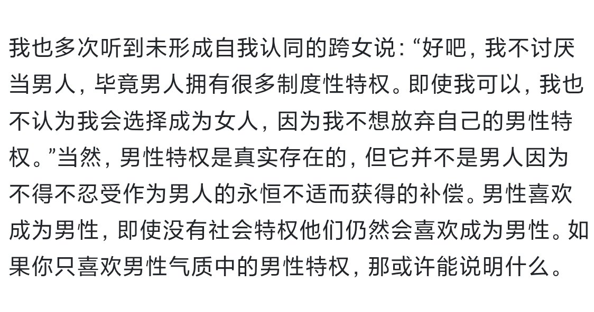

🍀🍥竹蜻蜓🍥🍀
@zqtlovekris99
我看这个里面没有讨论跨男的情况，那么我想咨询你一下，如果这种情况你称之为没有形成自我认同的「跨女」，那反过来说，我如果只反感男性特权，讨厌女性在社会中的各种不公平对待才不想当女的，而我也没有很想当男的，假设有一个男女在生理和社会层面上都完全平等的理想化世界，女性不用独自承受社会歧视和生育痛苦，那我很乐意当女的。你认为在我描述的情况里，我可以算做跨性别吗？我一直对我的性别认同很困惑，想听听你的看法

沫沫酱 winika
@momoya051115
给那些想吃糖或者不确定自己是不是跨儿的自确定网站：https://t.co/lRlfLTgXQU 性别烦躁指南，建议所有跨性别者和不确定的人观看